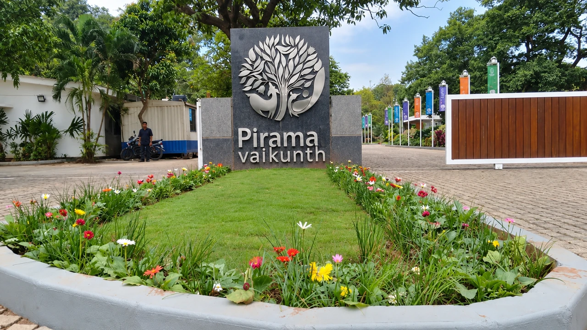
Kerb & cobble stone
Kerb stone edging with cobble-paved driveways and entrance bays.
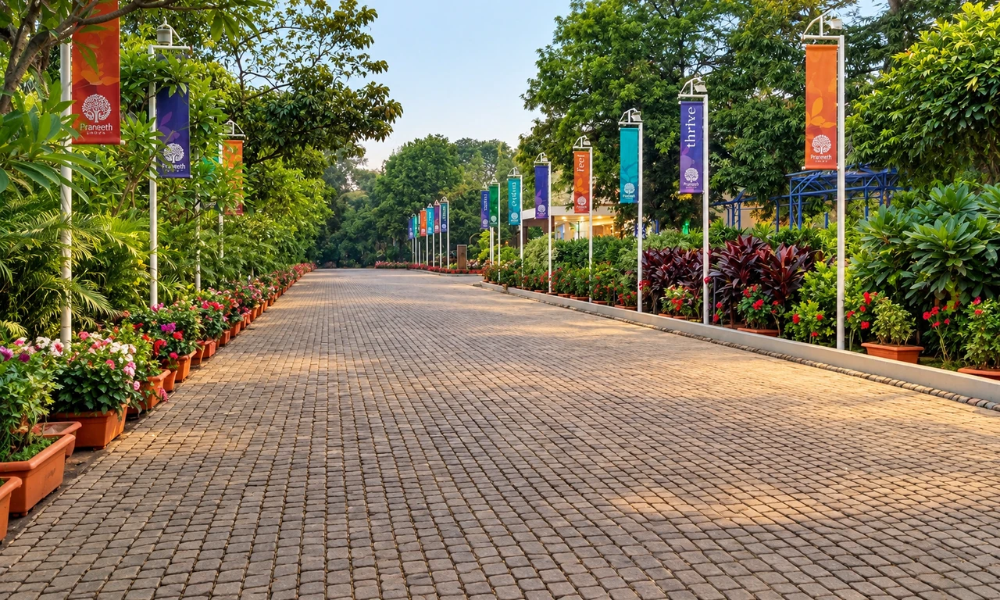
Paving, pathways, flooring, edging, steps and landscape-related civil works.


Hardscape forms an important part of any successful landscape. At 7 Petals, we undertake hard landscaping, hardscape and civil finishing works that create the functional foundation of outdoor spaces.
Our work can include pathways, paved areas, landscape edges, outdoor features, civil finishing and other site-specific works. We focus on quality execution, proper finishing and practical site integration, because hardscape is where functionality meets the landscape, and execution makes the difference.
Surfaces and structures from our own project files, each one built on site by the 7 Petals team.

Kerb stone edging with cobble-paved driveways and entrance bays.
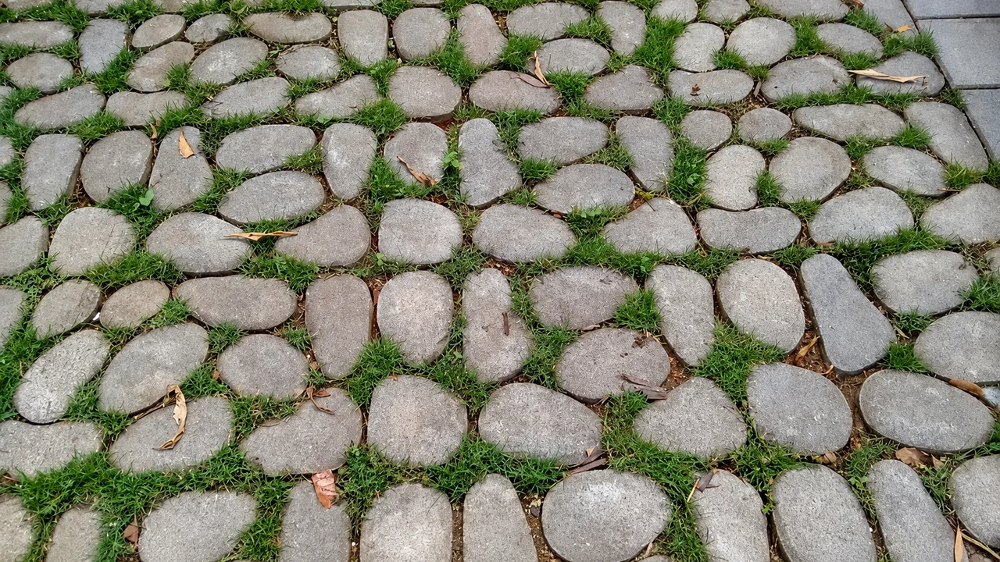
River-stone grass paver surfaces that stay permeable and green.
Coloured EPDM pathways with kerb edging for walking and jogging tracks.
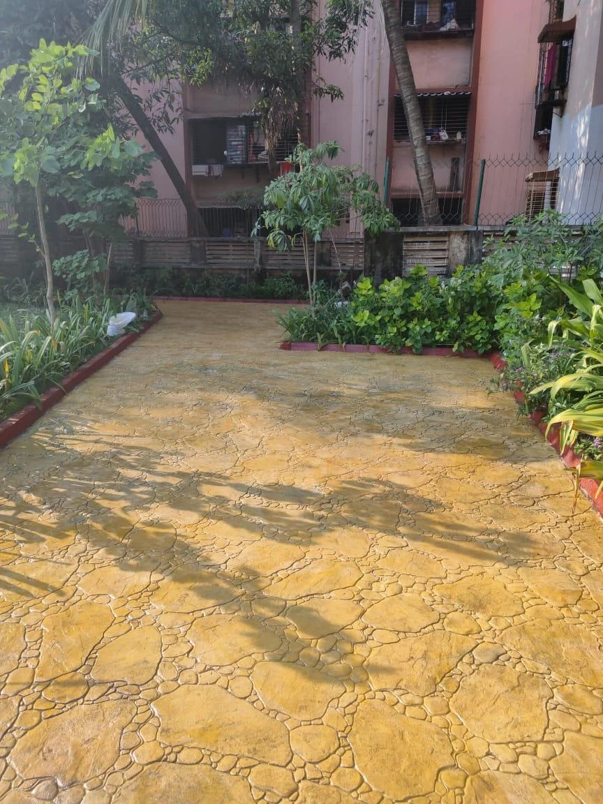
Stamped concrete finishes with cornered detailing.
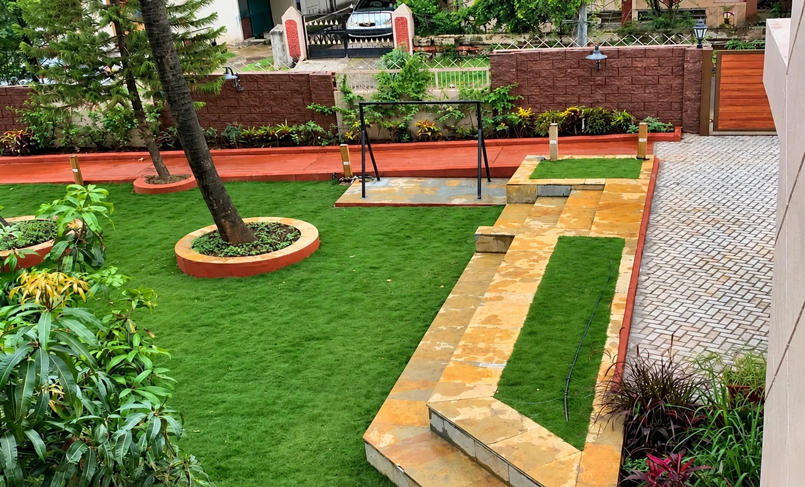
Trimix pathways with stone-edged lawns and masonry planters.
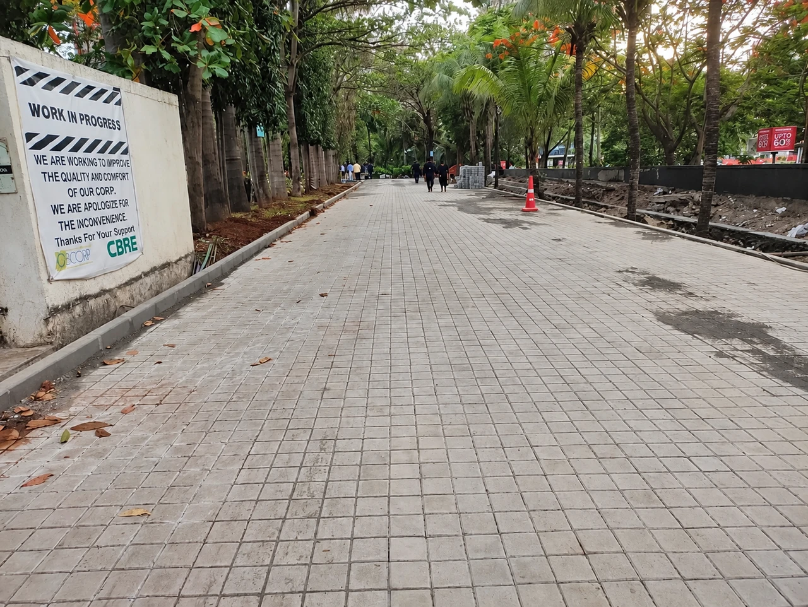
Paver block roads and kerb stone works for campus access.
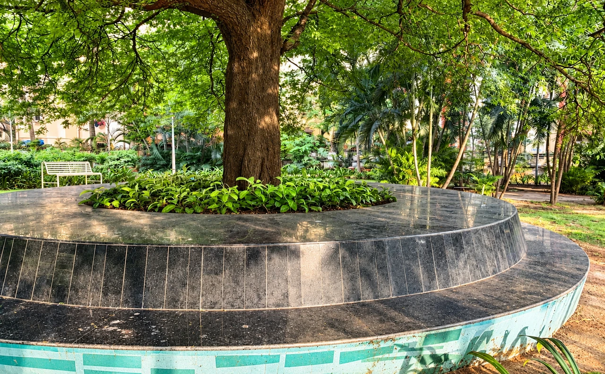
Granite and stone seating built around trees and planting.

Fabricated pergolas and shelters with paved bases and electrical works.
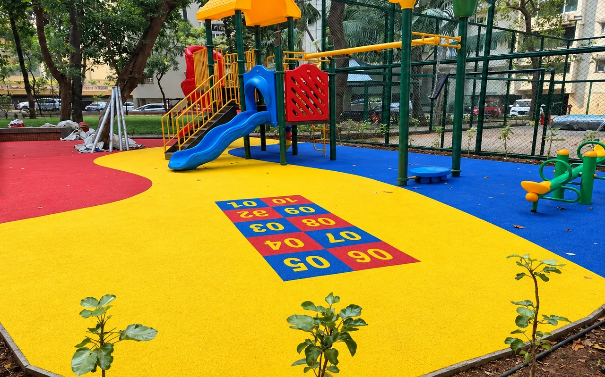
Coloured EPDM surfaces for playgrounds and courts.
Levels, drainage, access and the intended use of each surface are reviewed on site.
Stone, pavers, EPDM or concrete finishes are chosen to suit the location and use.
Excavation, base preparation, edging and masonry set the foundation for each surface.
Paving, kerbs, steps and surfaces are laid and finished with attention to line and level.
The area is cleaned and handed over ready for use or for softscape works to follow.
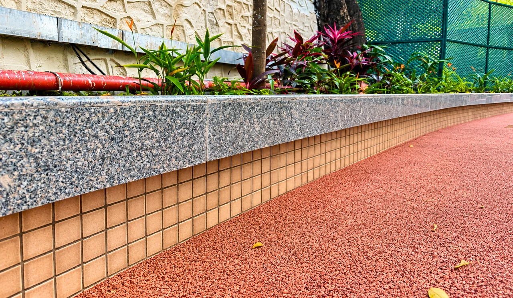
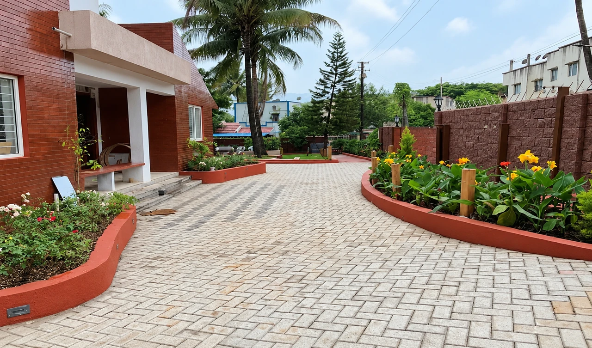
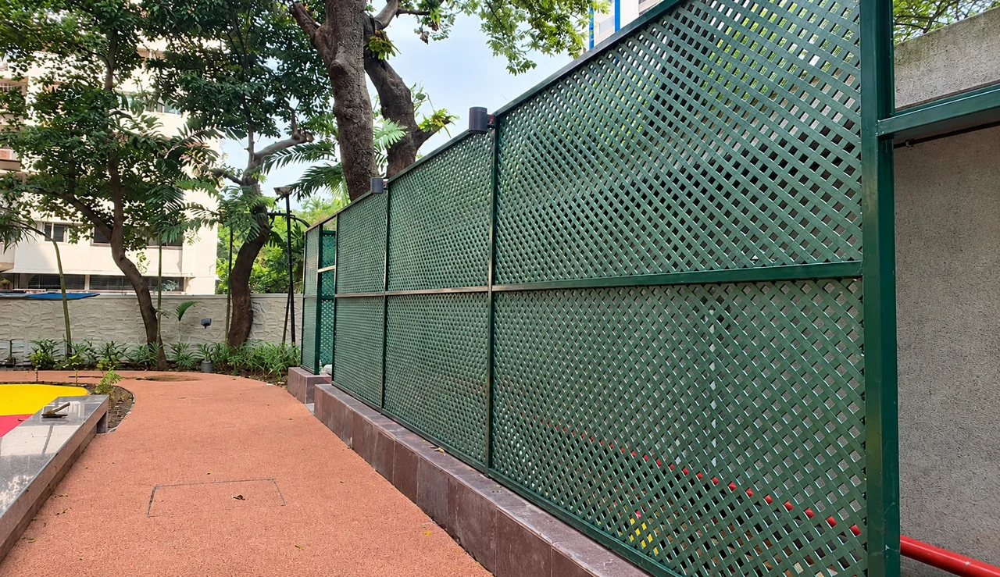
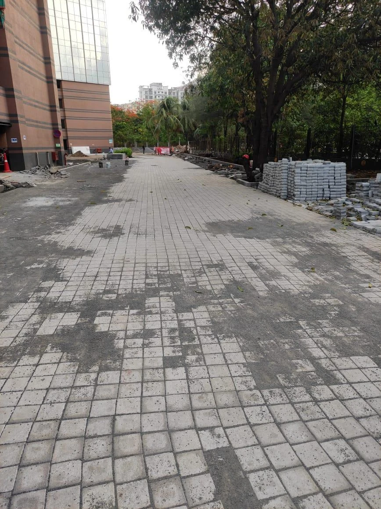
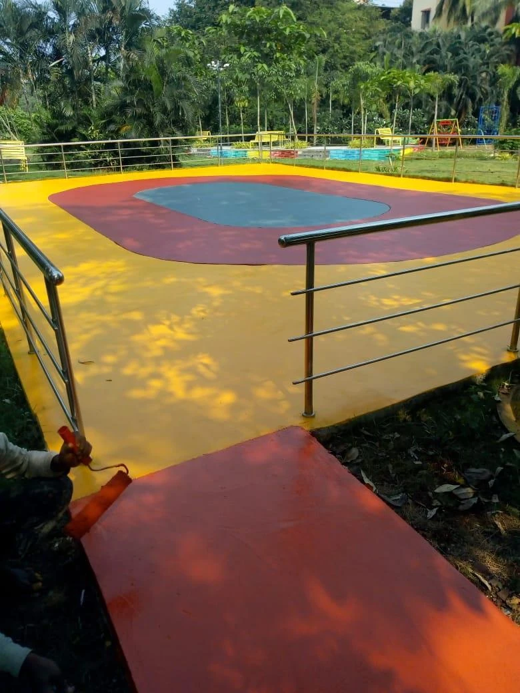
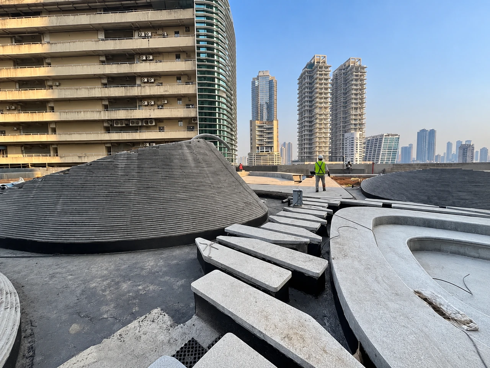

Landscape development for Piramal Realty’s Vaikunth project covering hardscape, softscape, irrigation and maintenance.
View project
Campus landscape at a corporate tech park: stone walkways under a steel pergola, timber decking, open lawns and paver block roads with kerb stone.
View project
A bungalow garden with a white-gravel court beneath a mature tree, red-finished masonry planters, trimix paths and a herringbone paver driveway.
View project
Lawns, plantation, trees, shrubs, soil preparation and garden development.
Learn more
Regular upkeep of lawns, plants, gardens and landscaped areas.
Learn more